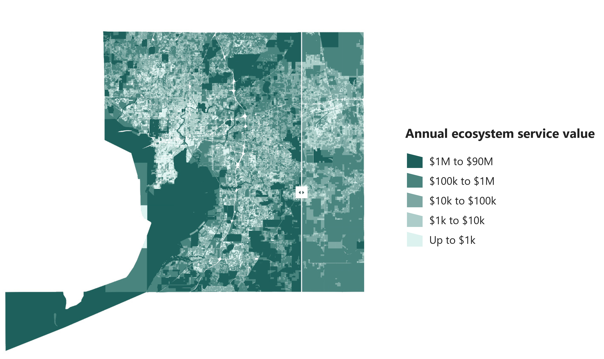

Hillsborough EcoValuation Tool
A parcel-scale tool that puts a dollar value on what natural land does for a community, such as holding floodwater and storing carbon.
Land managers weighing conservation acquisitions rarely see the economic value of ecosystem services at the moment of decision. The tool adapts the U.S. EPA H2O / EnviroAtlas methodology to Hillsborough County and estimates four services for every parcel: flood water retention, usable air, usable water and carbon sequestration.
Land cover, soils, tree canopy and other environmental layers are intersected with parcel boundaries, so each parcel resolves into ecosystem types with acreages and per-service values. Each is compared across current and alternative land-cover scenarios, one fully developed and one restored.
The analysis runs as a scripted ArcGIS Pro toolbox in Python. A configuration table drives data sources and publishing, so annual refreshes need no code changes, and a dry-run mode previews every publish. Results are delivered through a web application where selecting a parcel updates its land-use makeup and a chart of service values by scenario. Cached vector tiles keep a map of more than 500,000 parcels responsive.
Authorship: co-authored with Dr. Kotryna Klizentyte (University of Florida), who carried out the literature review behind the valuation calculations.
My contribution: I built the analysis pipeline and ArcGIS Pro toolbox and delivered the results through the web application. I also wrote the operations guide and parcel report templates that let County staff refresh the data and produce reports on their own.

CurrentDeveloped